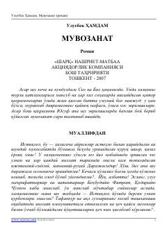

МMustaqillik davri murakkabliklari va insoniylik muvozanatini saqlashga intilgan qahramon taqdiri.
Ushbu roman inson va jamiyat o'rtasidagi murakkab munosabatlar, mustaqillik davridagi ma'naviy-ruhiy o'zgarishlar va qahramonning hayotiy muvozanatni saqlash yo'lidagi kurashlari haqida hikoya qiladi. Asar bosh qahramoni Yusufning taqdiri misolida davr sinovlari va insoniy qadriyatlar ulug'lanadi.